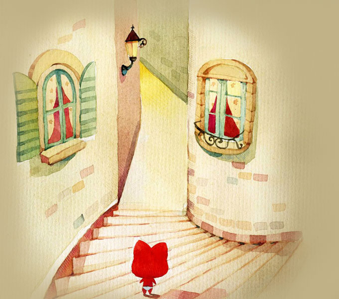
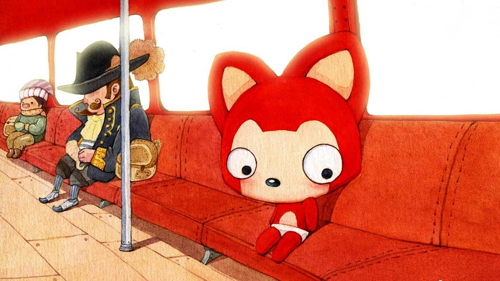

阿扬 ❤ 小易 一生一世
按键盘 "↓" 开始倾听阿扬的浪漫表白
过去的阿扬一直是一个人生活，享受着孤独，也憧憬着爱情。

一个人的长廊
一个人的山岗

一个人的地铁
一个人的游乐场

但他依然乐观，微笑着，等待着

生活难免有风风雨雨

他总是能够轻松的应对

并且面带阳光、自信的笑容

生活也不会总是一帆风顺

但他每次都能勇敢的面对
随时准备接受生活的挑战


可是阿扬的爱情又在哪里呢？
在镜子里面吗？他不敢相信

他去问大树，我的爱情在哪里？
大树告诉他，也许就在不远的地方

于是，阿扬一个人继续向前走
走在茫茫的雪地上

直到有一天阿扬与小易相遇了

阿扬喜欢小易，非常非常的喜欢，因为小易的出现，阿扬脸上有了更加灿烂的笑容

可是小易会喜欢阿扬吗？


阿扬想。。。

阿扬想和小易在一起
然后阿扬会经常去找小易

然后两个人一起出去玩

晚上阿扬会把小易送回家

直到很晚
阿扬再一个人回家

然后高兴地进入梦乡，在梦中还会和小易在一起

阿扬想成为了小易的逛街助手

然后，阿扬和小易一起去很多地方玩

阿扬也想和小易一块成为一对吃货
再然后，他们会搬到了一起

再然后，阿扬会开始学习新的技能

煮饭

那时候，每天早上，阿扬做好美味的早饭

然后在同一个站台，高高兴兴的一起上班
阿扬会感觉自己好幸福。
因为自己有了家
那个有小易在的地方

他们可能偶尔也会吵架

阿扬不想这样


一定是我有什么做的不对，小易会这么想
如果没有小易在身边，窗外就没有风景

如果没小易在身后


阿扬又怎会飞的更高更远
阿扬不想这样。他要为小易改变自己
阿扬不知道小易喜欢什么，但他一定会满足她的一切。


我愿意一直陪伴着你
爱情就像花草一样
需要用包容来浇灌

直到一天，小易因为一些原因不得不暂时离开阿扬两年
并且嘱咐阿扬一定要等待自己

知道这个消息的阿扬很难过 但是根本没有时间去反应 小易已经离开了 于是阿扬每天都会想念小易

想想未来他们或许 会有一辈子 阿扬好开心 或许他可以和小易一起 去全世界好多地方玩
阿扬也会继续努力
为了他和小易的梦之城堡


阿扬很幸福，因为他遇到了小易。他相信后面的每天都会是快乐的
阿扬想和小易一起过幸福的生活


永远有多远？
比时间多一秒就是永远，我会永远爱你
世界有多大？
你走到哪里，世界就有多大
两年之后，你必须还是我的女朋友


我爱你
I love you

我相信，阿扬和小易的故事会一直继续下去。
无论精彩、平淡都会是他们喜欢的。
小易，我爱你